Havaianas pra presenteLojas própriasFranquiasVarejoDia das Mães 2027Ideia boa é a que acontece na lojaHavaianas pra presenteLojas própriasFranquiasVarejoDia das Mães 2027Ideia boa é a que acontece na loja
Sexta-feira, 7 de maio de 2027. 12h40.
Ela tem quinze minutos de almoço, não sabe o número que a mãe calça e ainda não comprou nada.
Ela não vai sair procurando presente.
O presente é que precisa encontrar ela.
É desses quinze minutos que a gente vai falar.
Como esta apresentação está organizada
Duas partes, na ordem do que vocês pediram.
Parte 1 O case criativo, que responde ao briefing da Aura
O briefingObjetivo, público, período e o pedido de cada canal
Como a gente chegou aquiProcesso, a data em números, quem compra, bench e histórico
O KV da lojaO conceito global da Aura adaptado para o Dia das Mães
Por que cada peça está aliOs conceitos que sustentam cada escolha
DTC Lojas PrópriasBig Hello, prateleiras, embalagens, vitrine e cenografia
DTC FranquiasMesa com caixas, Compacta 4, prateleiras e kits
B2B VarejoAlimentar, cross-merchandising e volume para impulso
Do desenho à fábricaA engenharia em andamento e a produção
Parte 2 Os sete itens do convite da fase 2, na mesma ordem
Estrutura de atendimentoitens 1 e 2Atendimento e segmentação por escopo
Custos e remuneraçãoitens 3, 4 e 5Composição, custos adicionais e remuneração
Gestão da operaçãoitem 6Ferramentas, metodologia, dashboards e governança
Cronogramaitem 7O cronograma detalhado
Os valores ficam só no open cost do COUPA. Aqui não aparece custo.
Toque num número para ir direto ao capítulo
01
Parte 1 · O case criativo · capítulo 01 de 12
O briefing
O que vocês pediram para o Dia das Mães da Aura, e como a gente entendeu.
Responde ao briefing Aura: objetivo, público, período e o pedido de cada canal
01O pedido em uma página
02O que cada canal precisa
03Como a gente leu
O pedido em uma página
Levar a Aura para a data mais emocional do varejo.
12/04a campanha entra nas lojas próprias e franquias
19/04as peças chegam ao varejo
09/05Dia das Mães
O que a consumidora contou nas pesquisas
O brilho faz diferençaO metal na tira faz ela aceitar pagar mais.
Pedra é elegânciaAs pedrinhas passam sofisticação.
Elegante é simplesDesenho limpo, cada detalhe pensado.
Vai para mais lugaresCom enfeite, o chinelo sai da praia.
O que fazer
Levar a campanha global da Aura para o Dia das Mães, sem perder o jeito Aura.
A mensagem
Havaianas pra presente. Depois, Novas Havaianas Aura.
Para quem
Mulheres de 25 a 45 anos, A, B e C, que amam um detalhe bonito.
Como medir
Marca mais forte, gente falando e venda.
Fonte: [BID] Briefing Criativo Aura · Dia das Mães 2027, Alpargatas, e pesquisas de features da Havaianas de 2025 e 2026.
Três canais, três jeitos de chegar ao mesmo presente.
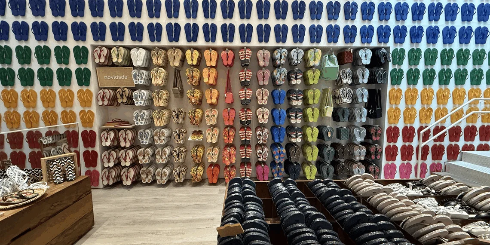
Loja própria · flagship de Ipanema12/04
DTCLojas Próprias
Big Hello na entrada
KV nas prateleiras
Sacolas, luvas e envelopes
Vitrine e mezanino da Oscar Freire
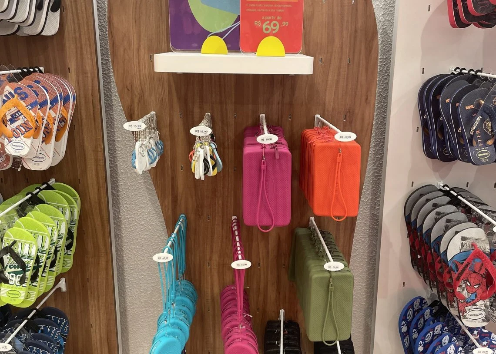
Loja compacta de shopping12/04
DTCFranquias
Mesa com as caixas de presente
Base na mesa da Compacta 4
KV nas prateleiras
Kits com tecido e fita
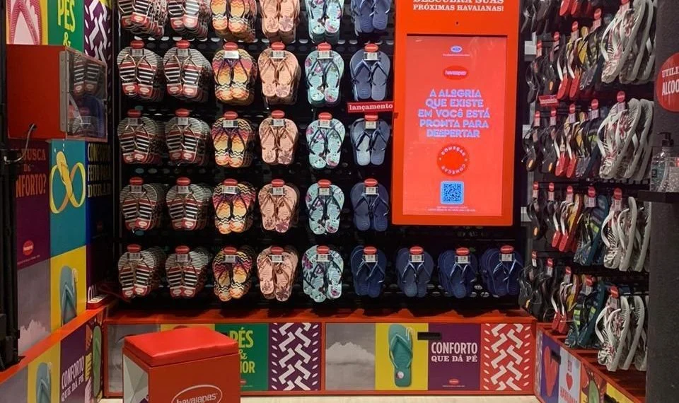
Espaço Havaianas no supermercado19/04
B2BVarejo
Stopper, testeira, moldura e ilha
A Aura perto de outros produtos
Muito chinelo à mostra
Mais tempo de preparo
09/05Dia das Mães
Fotos reais de lojas Havaianas: divulgação Havaianas, publicadas por Mercado & Consumo (2020, 2022 e 2025). Pedido de cada canal: [BID] Briefing Criativo Aura.
Como a gente leu o pedido
Presente se compra em três tempos. A loja precisa ajudar nos três.
0s
Pra reconhecer
De longe ela já entende: é Dia das Mães, é Havaianas e tem presente ali.
vitrine · ponta · ilha · placa de carrinho
0s
Pra escolher
As três cores lado a lado, como numa joalheria, com preço e numeração à vista.
mesa Big Hello · expositor · moldura
0min
Pra levar pronto
Caixa, fita, cartão e sacola na hora de pagar. Ela sai com o presente embrulhado.
estação de presente · embalagens
02
Parte 1 · O case criativo · capítulo 02 de 12
Como a gente chegou aqui
O passo a passo da criação, num prazo bem curto e sem pular nenhuma etapa.
Mostra o processo, a data em números, o comportamento de quem compra, o bench e o histórico da Havaianas
01Dia a dia
02A data em números
03Quem compra e por quê
04O que as marcas fazem
05O que a Havaianas já fez
06O que a gente estudou da marca
07Referências
O KV chegou na segunda, às 18h30. A entrega era na sexta, às 17h.
0dias úteis entre o briefing e a entrega, com um feriado no meio
0pessoas no time do case: direção, criação, 3D, tráfego e atendimento
0hde trabalho no case: as 6 pessoas dedicadas a ele, do briefing à entrega
0imagens aprovadas, depois de 5 rodadas de ajuste
0desenhos técnicos para a fábrica, que seguem sendo ajustados
ConviteApresentação do caseBriefing por e-mailKV e guia · 18h30Entrega · 17h
Imersãobriefing, material da Aura e histórico
Pesquisamarca, consumidora e lojas de verdade
Referênciasart déco, joalheria, vitrine de presente
Produto e lojas em 3Dchinelos aprovados na 2ª rodada
KV da loja4 ajustes
Peças17 peças, 5 rodadas
Engenharia15 desenhos técnicos
Lojas e imagens4 lojas, 21 imagens
Cronograma e propostacom o ritmo real do time
Fonte: e-mails da Alpargatas de 17, 19, 23 e 24/11/2026 e os registros do time da 75 LAB no case.
A data · Dia das Mães
O Natal do primeiro semestre.
de vendas previstas no Dia das Mães de 2026R$ 0 biSó perde para o Natal · CNC
0 mi
de pessoas vão dar presente
R$ 0
de gasto médio por pessoa
0%
compram na loja física
0%
dão roupa, calçado ou acessório
R$ 0 bi
só no e-commerce
+0%
no preço de chinelos e sandálias
2027
A previsão sai em abril. A data cresce de 1,5% a 4,3% ao ano.
As matérias
Fontes: CNC (Diário do Comércio, 07/05/2026); Abecs e Instituto Datafolha (Giro News, 05/05/2026); ABIACOM (Giro News, 27/04/2026); FecomercioSP (Viva, 08/05/2026).
Quem compra o presente e o que pesa na escolha.
0%
acham difícil escolher o presente
Na loja: ajudar a escolher
0%
pensam no que a mãe precisa
Na loja: desejo de usar todo dia
0%
dão uma lembrancinha
Na loja: duas faixas de preço
0%
levam a mãe junto na compra
Na loja: falar com as duas
0%
pesquisam o preço antes
Na loja: preço à vista no par
7 em 10
dizem que a propaganda pesa
Na loja: a última mídia antes do caixa
Os apelos das campanhas de 2026o fim da mãe perfeitaherança entre geraçõesa mulher além da maternidadepresente com significadohumor e cultura pop
As pesquisas
Fontes: Google, citado por Meio & Mensagem (07/05/2026); MindMiners (Mercado & Consumo, 06/05/2025); Estudo Globo com PiniOn (Propmark, 24/04/2026); GestãoClick (ABC da Comunicação, 05/05/2026).
O que as marcas fazem no Dia das Mães.
beleza
moda
chocolate
O Boticário
A mais lembrada, com 23%. Em 2026, o ninho vazio.
Natura
A segunda, com 14%. Kits prontos para presentear.
Renner
“Entrelaços”: moda passada entre gerações.
Hering
Os ritmos da maternidade, sem a mãe perfeita.
Kopenhagen
O presente como memória.
Cacau Show
29 produtos e kits que a cliente monta.
O que a gente leva para a Aura
Presente já embrulhado vende mais.
Kit pronto e embalagem bonita lideram a lembrança.
Emoção sem clichê.
Desejo e cuidado, não sacrifício.
A loja virou palco.
Vitrine interativa, QR e personalização na hora.
tudo isso vai para aAura
Fontes: MindMiners (Mercado & Consumo, 06/05/2025); Meio & Mensagem, Women to Watch (07/05/2026); Propmark (abril e maio de 2026); Diário do Grande ABC (15/04/2026). Ações descritas a partir de reportagens públicas.
“Havaianas pra presente” já é a plataforma da marca na data.
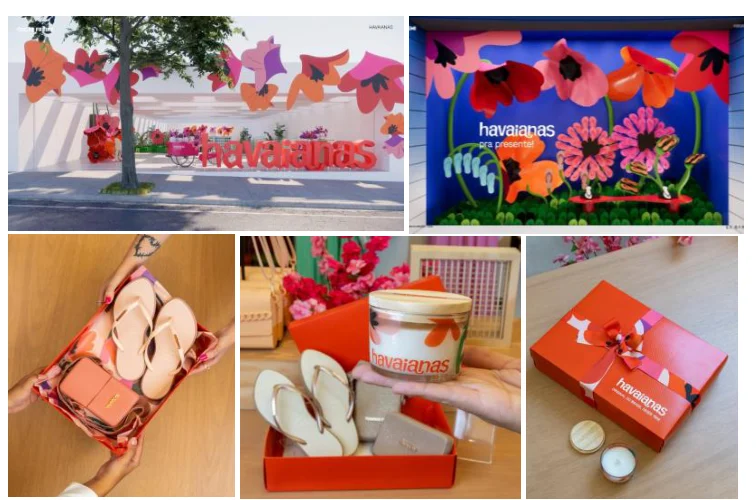
Fachada e vitrine com flores
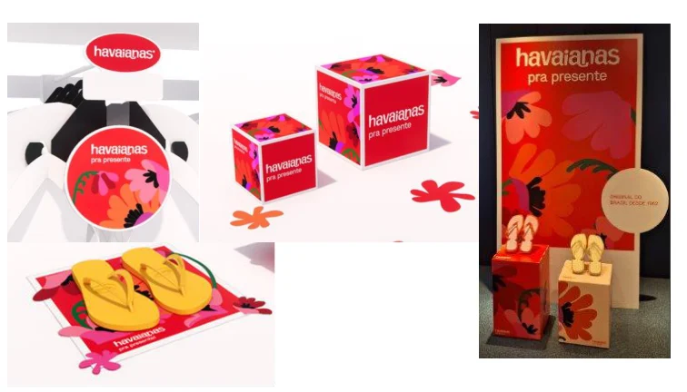
Displays “pra presente” no varejo
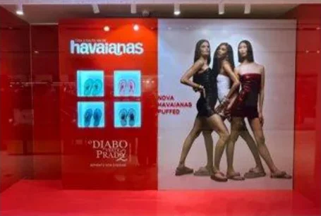
Vitrine com o filme
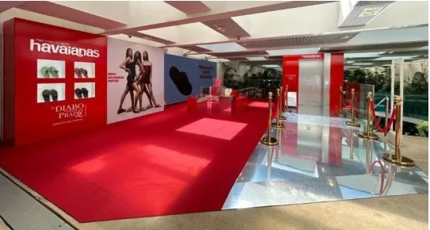
Tapete vermelho na loja
2025
Campanha com a GALERIA.ag
Flower bar na Oscar Freire
Embalagem especial e brindes
2026
“Tira o salto, vai de Havaianas”
Kits no e-commerce
Tapete vermelho e influenciadoras
2027A Aura chega com um produto-joia.
Falta um ponto de venda à altura de um presente com pedra.
É aqui que a gente entra
Fontes: histórico do [BID] Briefing Criativo Aura (páginas 11 e 12); Acontecendo Aqui (09/05/2025); Meio & Mensagem (20/04/2026).
Antes de desenhar, a gente estudou a marca, quem compra e a loja.
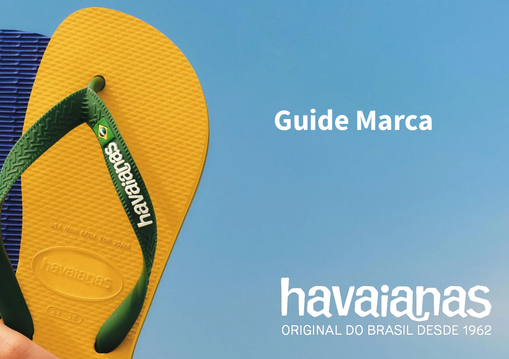
O guia da marca
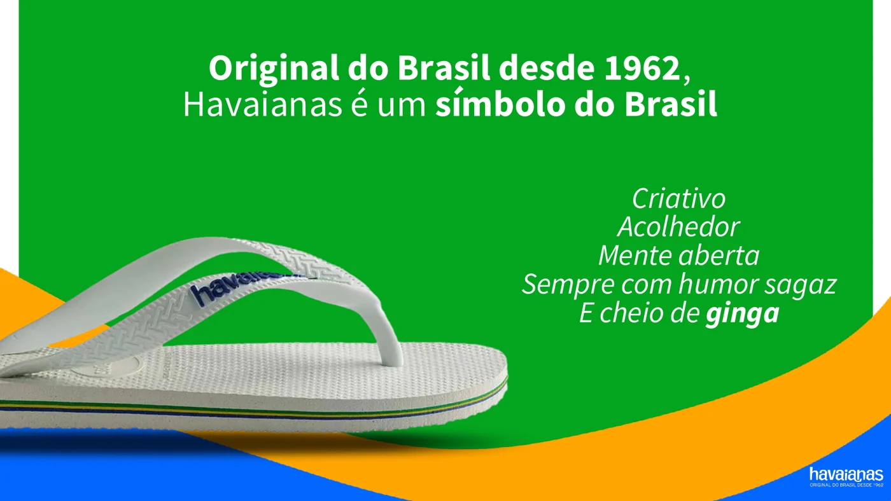
Original do Brasil desde 1962
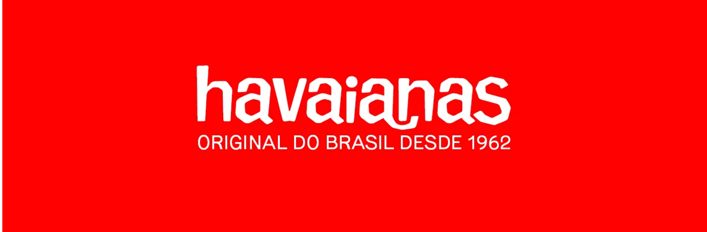
Logo e assinatura em vermelho
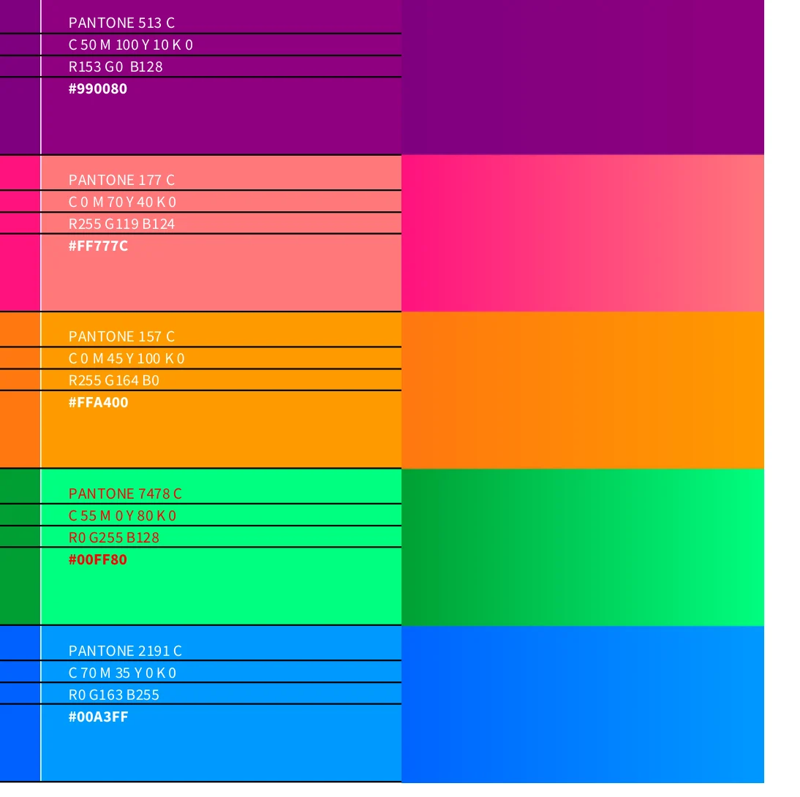
Cores vizinhas, em degradêMaison, sempre em caixa baixa
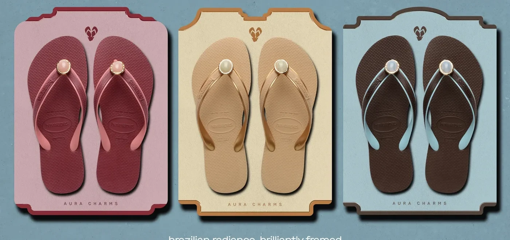
A Aura no KV global
A marca
0%dos brasileiros têm um par
0milpontos de venda no país
Alegria, humor e calor. Nem frio e minimalista, nem exagerado.
Quem compra
O brilho na tira faz ela aceitar pagar mais
Pedra é sinal de elegância
Elegante é desenho limpo
O enfeite leva o chinelo para mais lugares
A loja de verdade
Logo vermelho grande na fachada
Plaquinha oval de preço no gancho
Numeração em etiqueta redonda
No supermercado, faixa vermelha com um logo só
Fontes: Guide de Marca Havaianas (Select VBI), KV global da Aura, briefing Aura e fotos públicas de lojas Havaianas em 2025 e 2026.
Quatro referências, e o que cada uma ensinou.
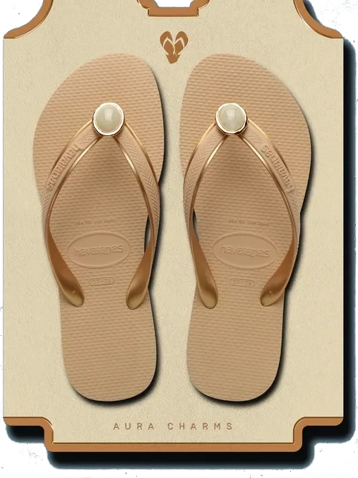
Art déco brasileiroAs molduras das portas e janelas das casas antigas viraram o recorte de todas as peças.A moldura é a marca.
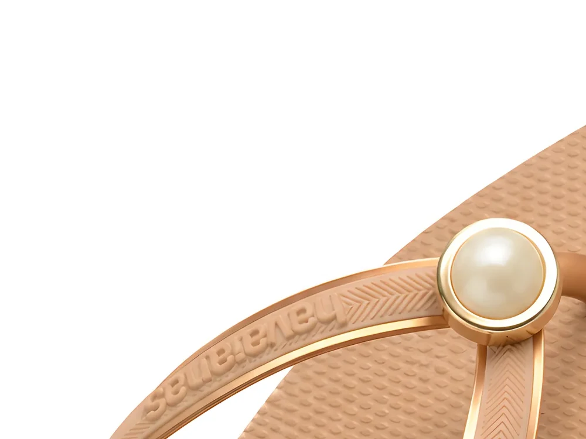
JoalheriaA pedra da Aura é uma joia: pede moldura, tecido e luz.Um par por moldura.
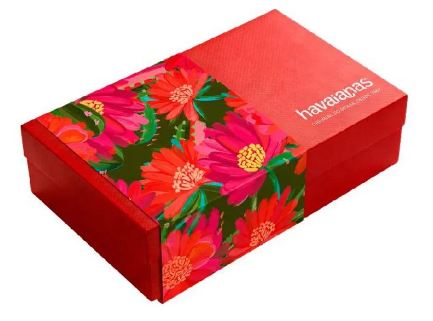
O presente prontoA caixa vermelha da marca já é presente: falta a fita na cor do chinelo e o tecido.A embalagem também vende.
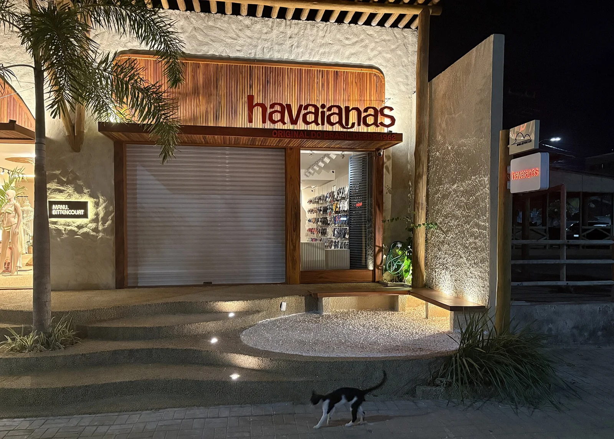
A loja HavaianasLogo vermelho na fachada, parede por cor e pouca informação.A campanha entra e a loja continua Havaianas.
O que a gente viu no mercado
Presente se escolhe pela corAs três cores juntas fazem ela decidir mais rápido.
Preço à vista ajudaPlaquinha em todo par e etiqueta em toda cor.
Embrulhar faz parteQuem sai com o presente pronto não desiste no caixa.
No supermercado, quantidade vendeMuito chinelo ao alcance da mão.
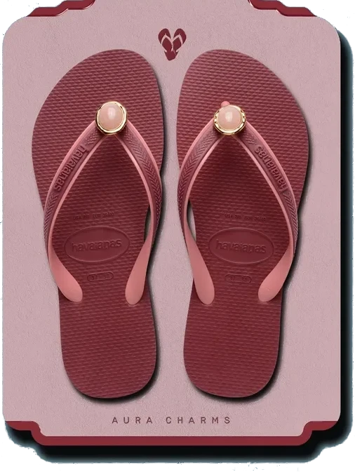
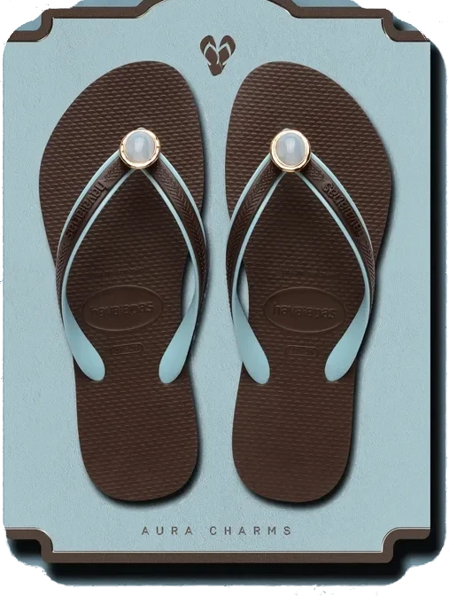
Até aqui
O racional.
O pedido, o processo, a pesquisa e as referências.
A partir daqui
Agora, a campanha.
O KV da loja, as peças e as lojas prontas para o Dia das Mães.
03
Parte 1 · O case criativo · capítulo 03 de 12
O KV da loja
Como a gente transformou o KV global da Aura em comunicação de ponto de venda.
Responde ao briefing: adaptar o conceito global da Aura para o Dia das Mães
01O KV que chegou
02Os quatro ajustes
03A ordem de leitura
04Do maior ao menor
Onde tudo começou
Recebemos um KV de lançamento.
O KV global da Aura: os três chinelos em cartões art déco sobre o azul, o logo new havaianas Aura e uma frase em inglês.
O que já funcionavaO azul, os cartões art déco e a foto dos chinelos. Isso a gente manteve.
O que faltava pra dataFalar de presente, em português, numa frase que se lê em dois segundos.
O KV que chegou · new havaianas Aura
Quatro ajustes e o KV passou a falar de presente.
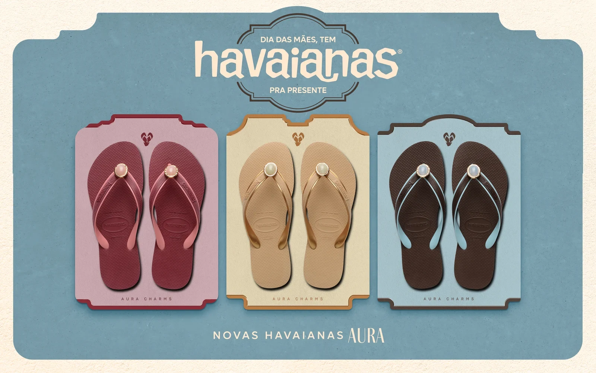
antes · KV globaldepois · KV da loja⟷
1A borda
O recorte art déco dos cartões virou o contorno das testeiras, da vitrine e das laterais.
2A frase
Sai o inglês e entra “Dia das Mães, tem Havaianas pra presente”.
3O selo
A moldura junta frase e marca, e funciona sozinha nas peças pequenas.
4A assinatura
“Novas Havaianas Aura” desceu para o rodapé, pra não brigar com a data.
Arraste o meio da imagem para comparar. KV da loja criado pela 75 LAB a partir do KV global da Aura enviado pela Alpargatas em 23/11/2026.
Uma ordem que vale pra todas as peças
Marca, data, produto, lançamento.
1MarcaHavaianas é sempre o maior elemento, dentro do selo.
2Data“Dia das Mães, tem … pra presente” abraça a marca.
3ProdutoOs chinelos nas molduras, de frente pra quem compra. A Aura é o presente.
4LançamentoNovas Havaianas Aura, no rodapé de cada peça.
Na loja ninguém para pra ler: a pessoa bate o olho e entende. Por isso a ordem nunca muda de uma peça para outra.
1234
O mesmo selo funciona de 2,6 metros a 15 centímetros.
A gente não redesenhou a campanha em cada peça. Usou as mesmas regras em todos os tamanhos, e é isso que deixa a loja própria, a franquia e o supermercado com a mesma cara.
2,6 milha
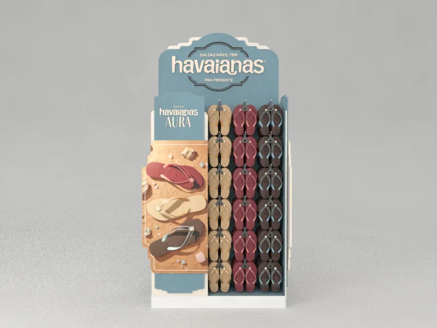
2,2 mponta de gôndolavitrinelogo em relevo2,0 mmesa Big Hello
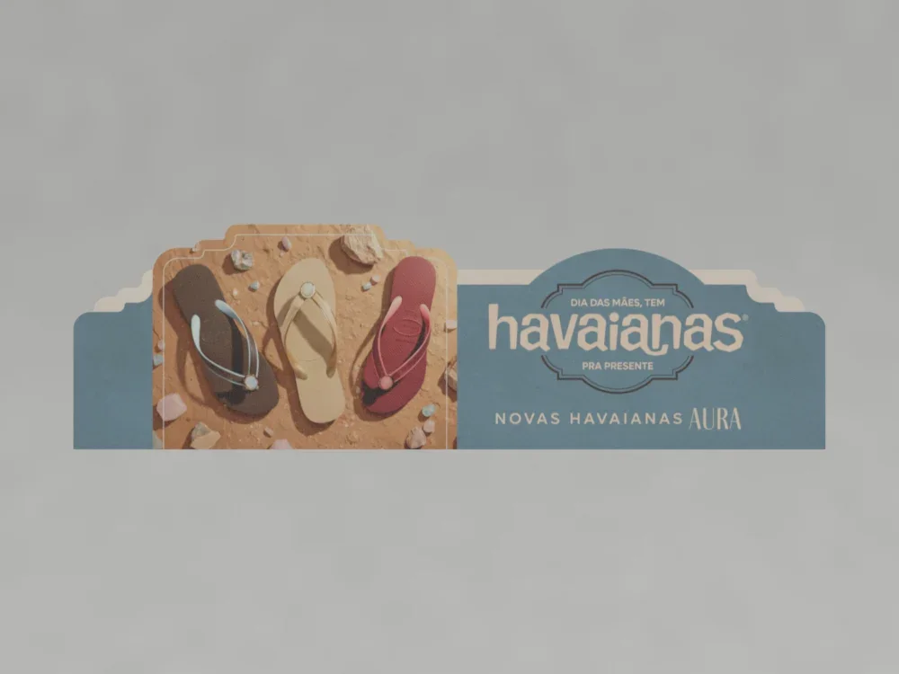
100 cmtesteira15 cmwobbler
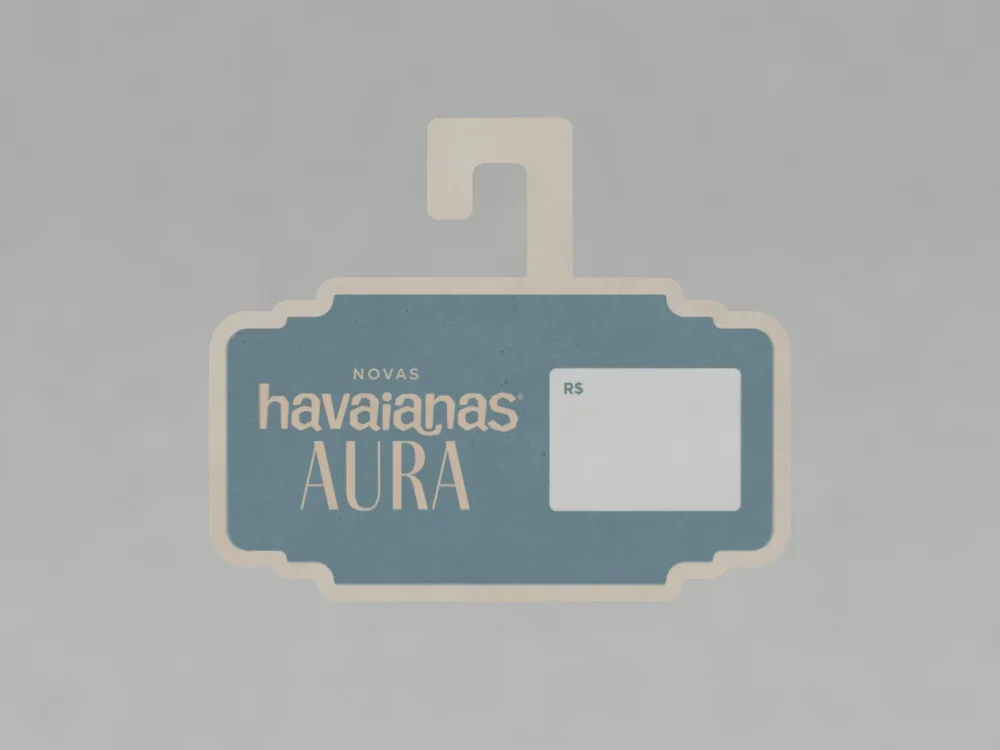
18 cmtag
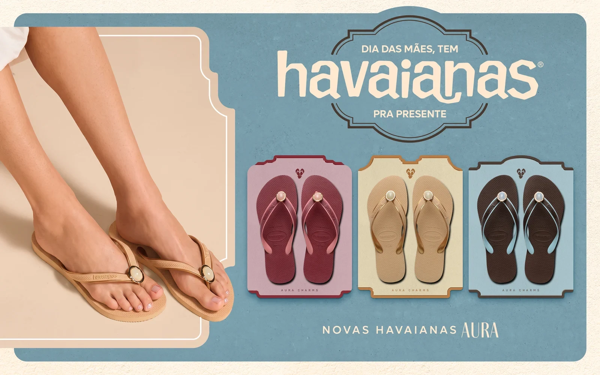
Quando tem espaço pra foto, a moldura abre uma janela com a Aura no pé. O selo, as molduras e a assinatura continuam no mesmo lugar.
04
Parte 1 · O case criativo · capítulo 04 de 12
Por que cada peça está ali
As ideias de marketing e de varejo por trás de cada escolha, contadas sem complicação.
Mostra o racional das peças, com os conceitos que sustentam cada escolha
01Sete ideias, sete decisões
02O caminho do presente
Nenhuma peça está ali por enfeite. Cada uma tem um motivo.
A P&G chamou de primeiro momento da verdade os segundos em que a pessoa olha a prateleira e decide. Por isso a primeira peça que ela vê, a mesa ou a vitrine, carrega a campanha inteira.Segundo o POPAI, 76% das compras no varejo são decididas dentro da loja. No supermercado a Aura disputa atenção com tudo, e a peça é a última chance de convencer.Kahneman mostrou que a gente decide quase tudo no automático, rápido e sem pensar muito. Se todas as peças seguem a mesma ordem, ela reconhece em três segundos, sem esforço.Marca cresce quando é fácil de reconhecer. A moldura art déco e o selo se repetem do wobbler à ilha e viram um código da Aura, não só desta campanha.Dar presente tem um ritual: escolher, embrulhar e entregar. A estação de presente e as embalagens fazem o embrulho por ela, e ela sai da loja com tudo pronto, até o cartão.Logo depois da porta, a pessoa ainda está se situando e quase não presta atenção em nada. Por isso a mesa Big Hello fica alguns passos para dentro, onde o olhar já chegou.Produtos que combinam vendem juntos. A fita com cinco pares na gôndola de praia leva a Aura para quem foi comprar protetor solar e toalha.
As referências de cada ideia estão no próprio quadro.
Ver, parar, escolher e levar. Cada canal tem uma peça pra cada passo.
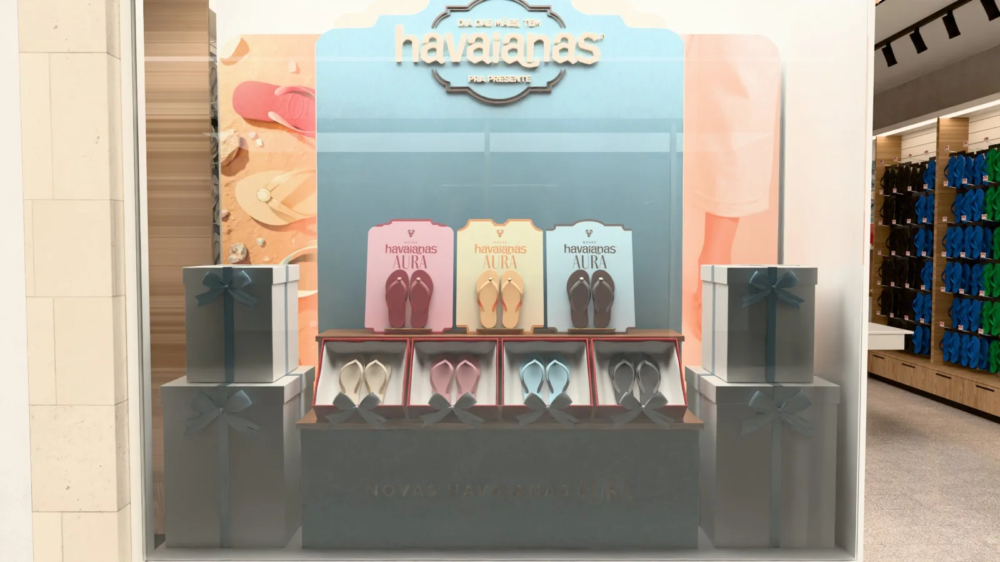
1
Verchama a atenção
Fachada e vitrine
Vitrine
Placa de carrinho e testeira
2
Parardesperta o interesse
Mesa Big Hello
Big Hello na mesa da loja
Ponta de gôndola e ilha
3
Escolherdá vontade
Expositor de prateleira
Expositor e caixotes
Moldura, wobbler e tag
4
Levarfecha a compra
Estação de presente e embalagens
Estação de presente e sacola
Fita de chinelos no gancho
Lojas PrópriasFranquiasVarejo
Modelo AIDA (atenção, interesse, desejo e ação), de E. St. Elmo Lewis, citado em Kotler e Keller, Administração de Marketing.
05
Parte 1 · O case criativo · capítulo 05 de 12
DTC Lojas Próprias
Uma loja de rua com a campanha inteira: onde cada peça fica e por quê.
Responde ao briefing: mesa Big Hello, prateleiras, embalagens, vitrine e cenografia
01A loja vista de cima
02A loja pronta
Vista de cima · loja de rua
Cada peça no ponto certo do caminho.
entrada
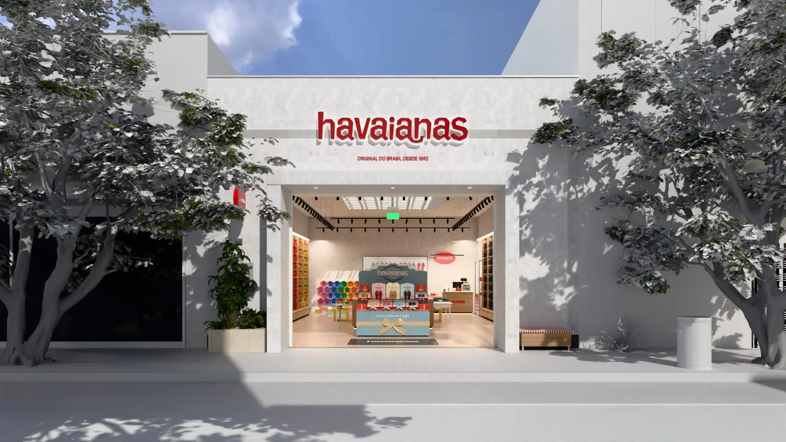
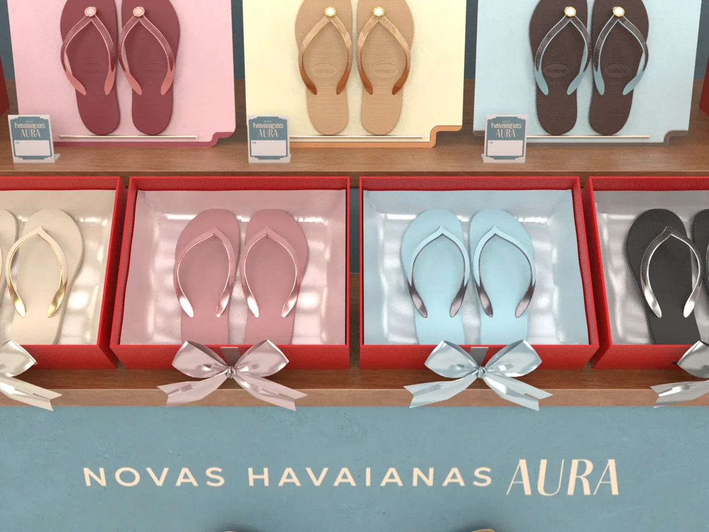
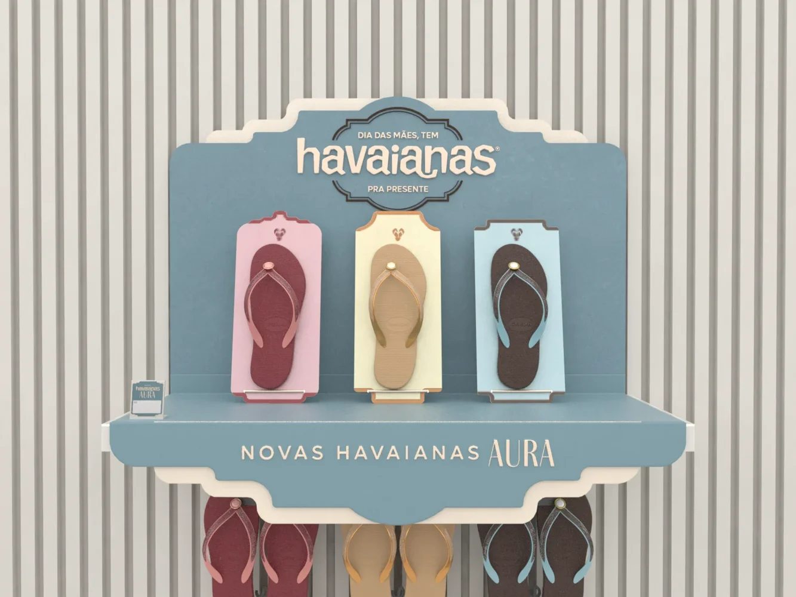
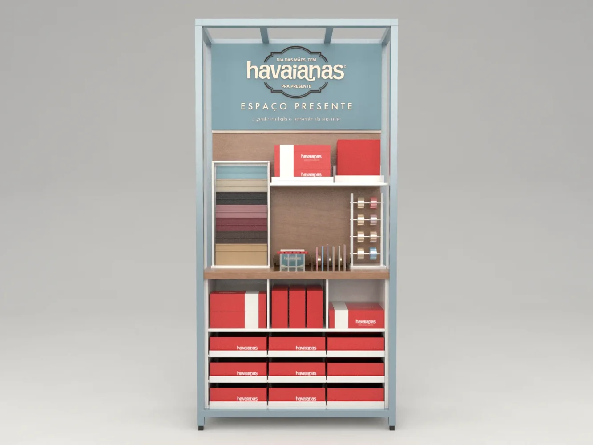
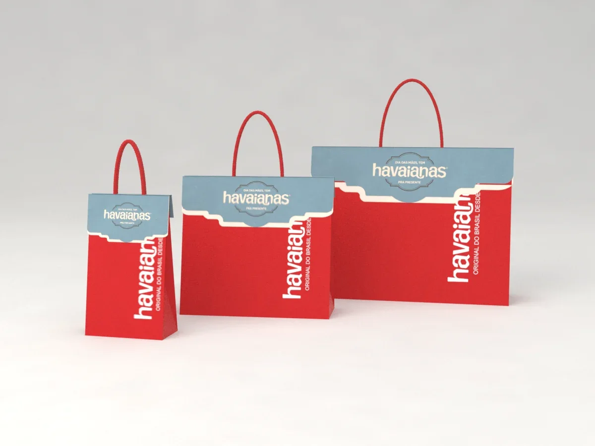
A loja própria no dia 12 de abril.
A mesa Big Hello logo na entrada
Imagens da 75 LAB: as peças aprovadas montadas numa loja de rua em 3D, com a comunicação igual à das lojas Havaianas.
06
Parte 1 · O case criativo · capítulo 06 de 12
DTC Franquias
Uma loja de shopping: a campanha entra na mesa e na parede que a franquia já tem.
Responde ao briefing: mesa com caixas, referência da Compacta 4, prateleiras e kits de presente
01A loja vista de cima
02A loja pronta
Vista de cima · loja de shopping
O dinheiro do franqueado onde a venda acontece.
corredor do shopping
A franquia pronta pro Dia das Mães.
As peças aprovadas
Imagens da 75 LAB: as peças aprovadas montadas numa loja de shopping em 3D. A vitrine de vidro foi colocada na frente aberta da loja para receber a peça.
07
Parte 1 · O case criativo · capítulo 07 de 12
B2B Varejo
Hipermercado e supermercado: bastante produto, compra por impulso e a Aura perto de outros produtos.
Responde ao briefing: materiais do alimentar, cross-merchandising e volume para impulso
01O hipermercado visto de cima
02O corredor visto de cima
03O varejo pronto
Vista de cima · espaço Havaianas no hipermercado
A ilha chama quem passa no corredor principal.
corredor principal do hipermercado
Vista de cima · corredor de supermercado
A Aura dentro e fora do corredor de calçados.
corredor principal
No varejo, produto na mão e presente em todo canto.
Imagens da 75 LAB: as peças aprovadas montadas num espaço de hipermercado e num corredor de supermercado em 3D. Passe o mouse para parar e clique para ampliar.
08
Parte 1 · O case criativo · capítulo 08 de 12
Do desenho à fábrica
Os desenhos técnicos, que seguem em andamento, e como a gente cuida da produção até a loja.
Mostra a engenharia em andamento e a inteligência de produção
01Os desenhos técnicos
02Da gráfica até a loja
Em andamento · como estava em 26/11/2026
Pensada pra fábrica, não só pra ficar bonita na imagem.
Mesa Big Hello202 × 109,5 × 194,4 cm · base em camadas, dois tampos de madeira e caixas de presentepronto, igual ao aprovado
Ilha232,9 × 128 × 263,5 cm · cubos que giram e adesivo de chãotrocando a foto das laterais
Ponta de gôndola120,5 × 53,2 × 237,1 cm · topo em relevo e laterais com fototrocando a foto das laterais
Peças de gôndolastopper, testeira, moldura, tag, wobbler, fita de chinelos e placa de carrinho, em plástico de 1 e 2 mmrecortes prontos
Embalagenssacolas em três tamanhos, caixas com luva e caixa envelope, já planificadasajustando a sacola
Vitrine e estação de presentevitrine de 3,7 m de largura e os módulos da estação de presenteindo para a versão aprovada
Expositor e mesas das franquiasmolduras em plástico, ganchos e a peça em L que veste a mesa da lojaem desenho
Cada desenho técnico leva para a fábricaas duas versões de cormedidas e recorte em tamanho realmaterial e acabamento de cada partequantidades para orçaraproveitamento da chapacomo montar
Desenhos técnicos da 75 LAB para o case Aura: primeira versão de 24/11/2026, sendo ajustada para as imagens aprovadas em 25/11. Materiais e quantidades ainda em orçamento.
Da gráfica até a loja, sem desperdiçar a verba no caminho.
Compra por material
A gente junta as peças por material e negocia o volume, não peça por peça.
Três orçamentos
Toda peça tem três orçamentos, e vocês veem a comparação aberta.
Protótipo antes
Testa o protótipo antes do lote e confere cada lote antes de liberar.
Um kit por loja
Cada loja recebe o seu kit, com a lista do que veio e o guia de montagem.
Entrega por canal
Lojas próprias em ondas, franquias no Brasil todo, varejo nos centros de distribuição.
QR em cada peça
Mostra quando chegou e quando foi montada, com foto.
Como a gente cuida de cada verba
Lojas PrópriasVitrine e cenografia que podem ser usadas de novo no mezanino e na próxima campanha.
FranquiasPeças que vestem a mesa que a franquia já tem. O franqueado compra comunicação, não móvel.
VarejoPeças leves, que viajam em envelope, e estrutura grande só onde vende volume.
09
Parte 2 · O que o convite pediu · capítulo 09 de 12
Estrutura de atendimento
Quem cuida de cada frente e o que cada pessoa faz.
Responde aos itens 1 e 2 do convite: estrutura de atendimento e segmentação por escopo
01Quinze pessoas
02Quem faz o quê
03As três frentes
Quinze pessoas, todas só para a conta de vocês.
0pessoas
0horas por mês
0divididas com outro cliente
a contaHavaianas
Atendem as três frentesDTC · Lojas Próprias e FranquiasB2B · Varejo
Diretor(a) de criaçãoa mesma cara nas três frentes
Arquiteto(a) e 3Dlojas em 3D, vitrine e ambientação
Analista fiscalnotas, SEFAZ e pagamentos
Gestor(a) de conta Lojas Própriaso ponto focal nas lojas próprias
Gestor(a) de conta Franquiaso ponto focal da rede de franquias
estas cinco dividem o mês entre lojas próprias e franquias
Designer 3D e engenharia
Designer gráfico e arte-final
Produtor(a) de fornecedores
Produtor(a) de campo e SAC
Analista de logística
Gestor(a) de conta B2Bredes do alimentar e do especializado
Designer gráfico sêniorpeças de gôndola para cada rede
Designer de artes rápidaso pedido da semana em 1 a 2 dias
Produtor(a) de fornecedores B2Bvolume, amostra e lote
Analista de logística e implementaçãoCDs, montagem e retirada
O tamanho do time saiu das 11.060 horas que o nosso time registrou entre julho e outubro de 2026, aplicadas ao volume do escopo de vocês. Cargo, dedicação e custo de cada pessoa estão no open cost do COUPA.
O que cada pessoa entrega, decide e como a gente mede.
Funções, divisão entre as frentes e horas iguais às do open cost enviado pelo COUPA. 176 horas por mês equivalem a uma pessoa em tempo integral.
Quanto do time vai para cada frente.
O tamanho de cada círculo é o tamanho das horas. Quem atende mais de uma frente divide o mês entre elas, e ninguém é contado duas vezes.
DTCLojas Próprias0 hpor mês
DTCFranquias0 hpor mês
B2BVarejo0 hpor mês
9 posições · 3,90 pessoasA marca decide e paga. Mais criação, 3D e peça desenhada do zero.
9 posições · 4,44 pessoasO franqueado compra. O peso está em juntar pedidos e enviar.
8 posições · 6,66 pessoasA loja é de outra empresa. Cada rede tem seu tamanho e sua hora.
A mesma direção de criação nas três.De propósito: é ela que faz loja própria, franquia e supermercado falarem a mesma língua.
Divisão do mês de cada pessoa entre as frentes igual à do open cost enviado pelo COUPA. 176 horas por mês equivalem a uma pessoa em tempo integral.
10
Parte 2 · O que o convite pediu · capítulo 10 de 12
Custos e remuneração
Como o preço é formado, os impostos e o que fica fora do fee. Os valores estão só no open cost do COUPA.
Responde aos itens 3, 4 e 5 do convite: composição de custos, custos adicionais e remuneração
01Como a gente cobra
02Os impostos e a reforma
03O que o fee paga e o que fica fora
Um fee mensal fixo. E nada além dele.
O mesmo valor todo mêsNo mês leve e no mês pesado.
Zero honorário e comissãoNenhum percentual sobre produção, mídia ou frete.
A conta abertaCada pessoa no open cost, linha por linha.
Como o preço de cada pessoa é formado
O custo do timeas notas de quem trabalha na conta
As despesas fixasescritório, sistemas e administrativo
O que sai da receitaimpostos e margem, cada um na sua coluna
O preçoigual ao do open cost
+÷=
Impostos e margem saem da receita, não do custo. Por isso a margem do open cost é exatamente a que a 75 LAB ganha.
Os valores estão só no open cost enviado pelo COUPA, como pede o convite da fase 2.
Os impostos, explicados antes de assinar.
Lucro presumidoImposto e margem em colunas separadas no open cost.
Retenção não é custo novoSó antecipa o nosso imposto. O total segue o valor da nota.
Hoje não vira créditoPIS e Cofins não geram crédito no regime de hoje.
A reforma tributária começa durante o contrato, e a favor de vocês
2026CBS e IBS só em teste
2027a CBS substitui PIS e Cofins
2029 a 2032ISS e ICMS diminuem aos poucos
2033só CBS e IBS
A CBS gera créditoO que hoje fica na nota sem crédito vira crédito para vocês.
Nenhuma aposta no preçoO preço usa a carga de hoje, sem projeção.
Se a carga cair, o preço caiRevisão a cada mudança de lei, com a conta aberta. Fica no contrato.
EC 132/2023 e LC 214/2025. As alíquotas e a memória de cálculo estão no open cost.
O que o fee paga
e o que fica de fora.
feemensal fixo
O trabalho da agência
estratégia de canal e direção de arte
adaptação do KV para cada formato
engenharia das peças e arquivo final
imagens em 3D das lojas e das peças
orçamentos, comparação e recomendação
acompanhamento da produção e da logística
acompanhamento da montagem nas lojas
atendimento à rede e cuidado fiscal
o rastreio inteiro: sistema, painel, códigos e base de lojas
Pago pela Alpargatas direto ao fornecedor
produção das peças
distribuição e colocação no ponto de venda
armazenagem
mídia e veiculação
licença de imagem, cachê e direito de imagem
impressão do QR, que vai junto com a peça
etiqueta de GPS, que é material
Sempre com pelo menos três cotações, comparação lado a lado e recomendação por escrito. Sem honorário, agenciamento nem comissão da 75 LAB.
11
Parte 2 · O que o convite pediu · capítulo 11 de 12
Gestão da operação
O sistema, a central da rede, o QR que acompanha cada peça e como vocês ficam sabendo de tudo.
Responde ao item 6 do convite: ferramentas, metodologias, dashboards e governança
01O nosso sistema
02A central da rede e o SharePoint
03O QR em cada peça
04O painel
05Como vocês acompanham
Ariuno · o sistema de gestão da 75 LAB, ajustado para a conta
Cada pedido entra, sai e é aprovado no mesmo lugar.
PedidoEntregaAprovação
Sem senha: a pessoa abre o link da campanha e marca as peças. Já vem tudo separado por lojas próprias, franquias e varejo.
Quando a mesma peça vai para lojas diferentes, o sistema separa uma por tamanho. Assim não chega mesa grande em loja pequena.
O time coloca a arte dentro da própria peça, e cada versão fica guardada com data e autor.
Vocês aprovam ou marcam o ajuste em cima da arte, com número, seta, destaque e anexo.
Aprovado, esperando vocês, em ajuste ou em criação. E o tempo de aprovação de vocês aparece separado do nosso.
ariuno.com.br/?briefingFee=…
Passo 1 de 5
1O trade pede por um link2 e 3Uma peça por tamanho de loja, com a arte dentro4Ajuste marcado em cima da arte5Onde está cada material
Ariuno em modo de demonstração, com uma campanha de exemplo de Dia das Mães + Aura.
Simulação · a central que a gente monta para a conta
Um lugar só para a rede, pra gente e pra vocês.
E-mail e WhatsApp numa caixa só. Cada conversa com franqueado vira um chamado da loja, com prazo.
Cada loja com tamanho, planta, fotos e os pontos onde a comunicação aparece.
Lojas próprias, franquias e varejo no mesmo calendário.
Os arquivos ficam no SharePoint de vocês, organizados por campanha, tipo de loja e loja.
Onde cada campanha está, e um relatório que chega sem ninguém pedir.
01Atendimento à rede02Lojas e plantas03Um calendário só04O SharePoint de vocês05Status e relatório
Simulação da central da 75 LAB com dados de exemplo · nenhum dado de cliente.
Cada peça tem um código e conta a própria história.
HAV-DM27-BHL-0128Big Hello · Dia das Mães 2027 · loja 0128
1 · Código na peça
Cada peça sai da gráfica com a própria etiqueta, e não um QR igual pra todas.
2 · Saída
Quando sai do fornecedor, a leitura registra o que foi para cada loja.
3 · Chegada
A loja lê o código quando recebe. Em dois dias a gente sabe quem recebeu.
4 · Montagem com foto
Montou, tirou foto, com localização. Em uma semana está tudo registrado.
5 · Conferência
A gente confere uma amostra das lojas e vai atrás de quem não leu.
6 · Painel
Tudo ao vivo, por loja, rede, tipo de loja e estado.
QR em etiquetapara o material de campanha, em quantidadetesteira, wobbler, stopper, tag, fita de chinelos, placa de carrinho
GPS ou bluetoothpara peça cara, que voltamesa Big Hello, estação de presente, ilha, ponta de gôndola, cenografia
Já funciona hojea leitura abre a página da peça, com montagem e vídeo, e registra loja, localização e fotoo sistema está no fee; só a etiqueta é material de produção
Painel do QR · demonstração com dados de exemplo
A leitura chega ao painel na hora, com localização e foto.
Clique nas abas para trocar a vista
projetos.75lab.com.br/produtos/painel
Cada leitura guardaa loja, a rede, quem leu, a localização e a foto da fachada.
Uma loja, uma contagemleituras a até 150 metros contam como a mesma loja. O painel conta lojas, não cliques.
O varejo no dia 19 de abrilnesse dia o painel mostra quantos pontos de venda já estão com a Aura, rede por rede.
Excel e link ao vivotudo em Excel num clique, e o trade acompanha por um link, sem senha.
Números e ritmoMapa das lojasPor estado
Painel do QR da 75 LAB em modo de demonstração · dados de exemplo, nenhum dado de cliente.
Vocês sabem onde cada coisa está sem precisar perguntar.
Vocês
Todo diapainel ao vivo, atendimento à rede e a situação de cada peça
Toda semanaconversa com o trade de cada canal e relatório por e-mail
A cada 15 diascomo está cada campanha, com riscos e decisões
Todo mêsfechamento do mês, números e o que dá pra melhorar
A cada 3 mesesrevisão da estratégia e o calendário seguinte
O que a gente mede do nosso trabalho
Prazo de cada entrega, com o tempo de vocês separado
Peça que voltou para ajuste
Peça certa, na loja certa, no dia certo
Lojas que montaram, pelo QR
Custo por loja e por peça montada
O que a gente mede junto com vocês
Venda nas lojas com campanha e sem
Marca mais forte e conversa sobre a campanha
Venda das embalagens e dos kits
Giro do feminino no varejo
Acompanhamento pelo Ariuno e pelo painel do QR. Os resultados de negócio são os do briefing: força da marca, conversa sobre a campanha e venda.
12
Parte 2 · O que o convite pediu · capítulo 12 de 12
Cronograma
Montado de trás pra frente, a partir do dia da loja, com o tempo que o nosso time leva de verdade.
Responde ao item 7 do convite: cronograma detalhado
01Os três cronogramas
02As datas que não podem atrasar
Começando em 1º de dezembro, dá tempo, e com folga.
o tempo que a gente leva hoje, medido no nosso sistemaaprovação de vocês (4 dias úteis por rodada)estimadofolgaacontece ao mesmo tempo
Fonte: Ariuno, com 1.155 entregas feitas pela 75 LAB de julho a novembro de 2026. Feriados, aniversário de São Paulo e recesso de fim de ano já descontados.
Três datas seguram o Dia das Mães inteiro.
janeiro · 202706quarta-feira
Vocês aprovam as peças e as imagens em 3D. Para as franquias, um dia antes.
fevereiro · 202717quarta-feira
As franquias confirmam o que vão receber, e as redes fecham o espaço de ponta e ponto extra.
fevereiro · 202719sexta-feira
Vocês aprovam os protótipos. A produção começa no dia 18.
O que mais pode atrasar
A aprovação. Normalmente leva três dias e meio, mas às vezes passa de um mês. Uma terceira rodada de ajuste come toda a folga.
O que a gente propõe
4 dias úteis por rodada de aprovação, no máximo 2 rodadas
Aprovar as peças gráficas pela imagem em 3D
Fazer as peças pequenas enquanto as grandes ficam prontas
Produzir em 2 lotes, com as franquias primeiro
Fonte: Ariuno, tempo de aprovação de cliente em 24 entregas, de julho a novembro de 2026.
Domingo, 9 de maio de 2027. Dia das Mães.
A mãe abre a caixa vermelha, calça a Aura e sai para almoçar.


 2
2 3
3 4
4 entrada
entrada

 corredor do shopping
corredor do shopping corredor principal do hipermercado
corredor principal do hipermercado corredor principal
corredor principal